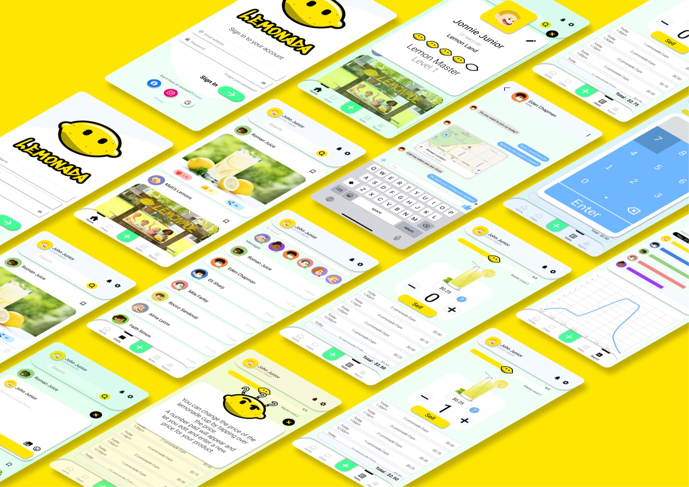
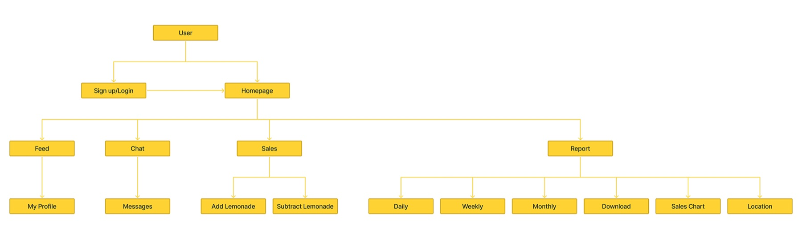
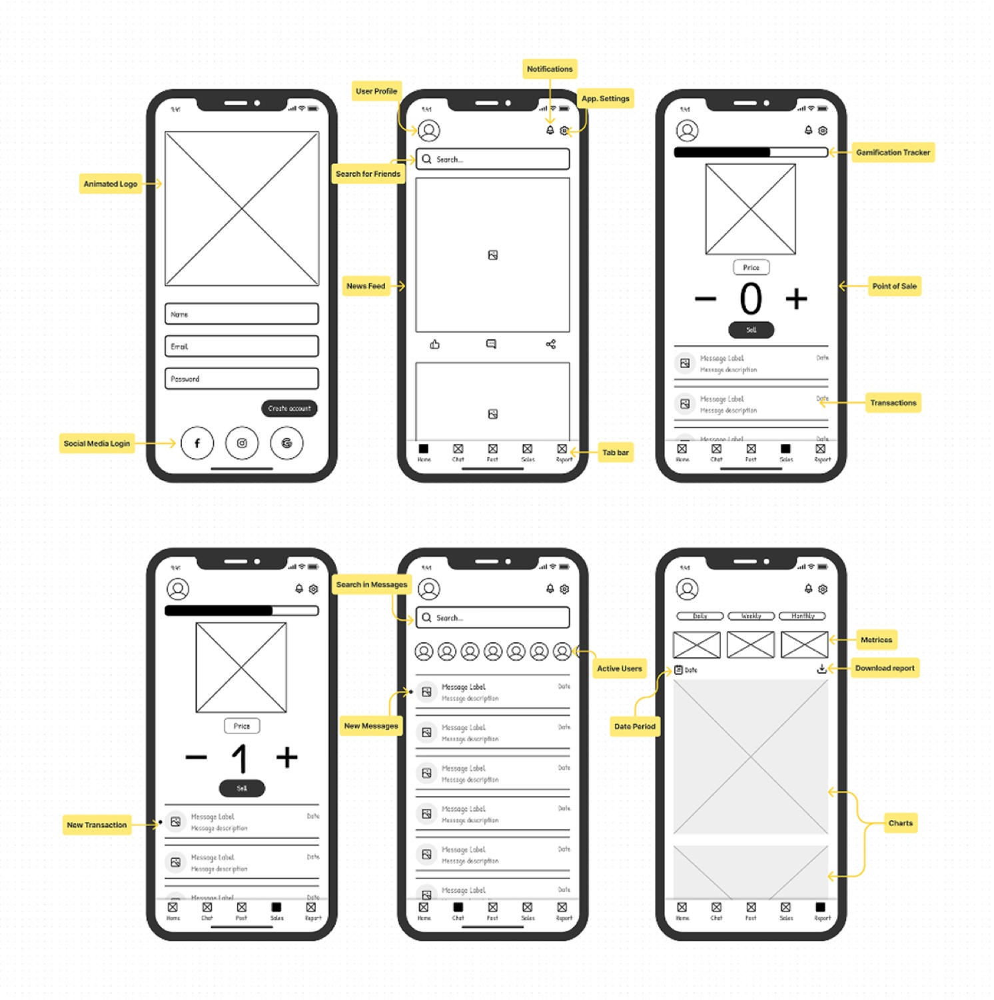

Work / Mobile App / Gamified entrepreneurship
Lemonada
The lemonade stand is many kids’ first business. Lemonada treats it that way. A playful platform where young sellers track sales and inventory, compete with stands in other neighborhoods, and learn entrepreneurship and financial literacy without noticing they’re learning.

A business tool kids want to open
Youngsters who sell lemonade want to keep track of their sales, and to interact with other children who sell it too. Lemonada is not just a tracking tool: it’s a vibrant community where kids connect, share experiences, and learn from each other through interactive tutorials and gamified learning experiences.
The app handles real-time sales tracking, expense monitoring, and profit calculations, teaching the basics of entrepreneurship and financial literacy from a young age while keeping every interaction accessible and engaging for kids. The deeper ambition: developing life-long skills in a fun, supportive environment, and a stepping stone in a child’s journey toward understanding business.
Architecture before aesthetics
In the initial phase I meticulously crafted the application’s information architecture, a clear roadmap of the information flow that delineates the user’s journey throughout the app. This foundational work not only clarified the overall structure and navigational scheme, it significantly streamlined everything that followed: with the blueprint set early, the wireframing phase proceeded with greater ease and precision.
The flow branches from the homepage into four limbs, Feed, Chat, Sales, and Report: with the sales limb carrying the working tools: add and subtract lemonade, daily/weekly/monthly views, sales chart, location, and download.


A palette doing psychological work
Light greens, yellow, light blue, and white, chosen deliberately for an app where children manage money:
- Positive engagement: bright yellow and greens create an inviting, fun atmosphere that encourages kids to engage enthusiastically.
- Calm and focus: light greens calm the stress out of managing sales while keeping kids focused.
- Trust and security: light blue lends the sense of trust and reliability that makes the app feel safe for kids and their parents.
- Growth and creativity: nature-inspired greens symbolize growth and renewal, encouraging new ideas for their stands.
- A user-friendly canvas: white backgrounds keep the aesthetic clean and minimal, reducing cognitive overload for young users.
A rival in every neighborhood
To enhance engagement and foster a competitive spirit among young entrepreneurs, I integrated gamification into the heart of the app: youngsters are motivated to outdo their own lemonade sales in their locale while staying informed about sales activity in other areas, spurring them to climb levels and reach higher within the app.
To give the application a distinctive personality, I created a character that acts as the face of the app: appearing across settings and displaying a range of emotions, adding depth and versatility to the app’s functionality while keeping the experience unmistakably for kids.
The essence of gamification lies in its ability to spur children on, encouraging them to increase their sales and achieve higher levels within the app.design rationale, Lemonada